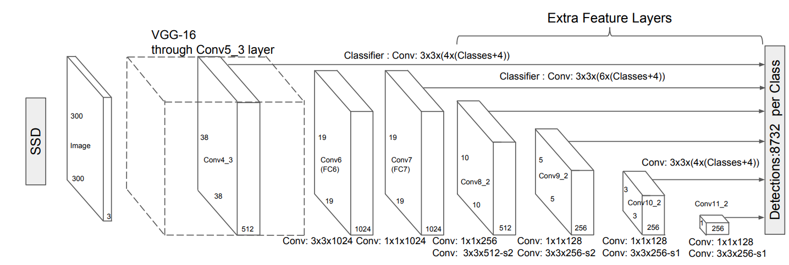
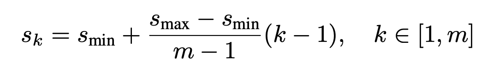
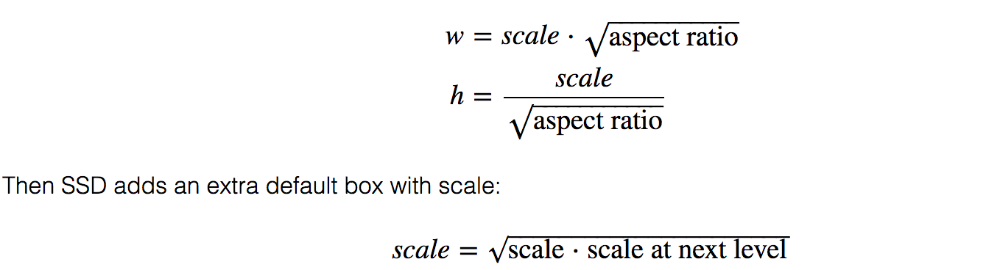
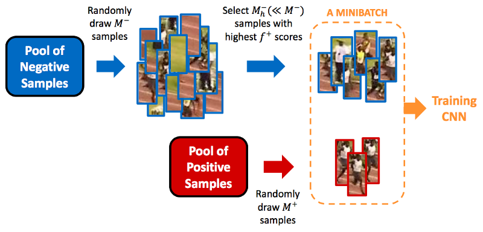

Single Shot MultiBox Detector(SSD)
- Single Shot: this means that the tasks of object localization and classification are done in a single forward pass of the network
- MultiBox: this is the name of a technique for bounding box regression developed by Szegedy et al. (we will briefly cover it shortly)
- Detector: The network is an object detector that also classifies those detected objects
Architecture

Choosing default boundary boxes
SSD defines a scale value for each feature map layer. Starting from the left, Conv4_3 detects objects at the smallest scale 0.2 (or 0.1 sometimes) and then increases linearly to the rightmost layer at a scale of 0.9.

the scale value with the target aspect ratios, we compute the width and the height of the default boxes. For layers making 6 predictions, SSD starts with 5 target aspect ratios: 1, 2, 3, 1/2 and 1/3. Then the width and the height of the default boxes are calculated as:

The center of each default box to , where is the size of the k-th square feature map, .
Default boundary boxes are chosen manually. The criterion for matching a prior and a ground-truth box is IoU (Intersection Over Union), which is also called Jaccard index. The more overlap, the better match. The process of matching looks like follows:
for every ground-truth box:
match the ground-truth box with prior having the biggest the IoU
for every prior:
ious = IoU(prior, ground_truth_boxes)
max_iou = max(ious)
if max_iou > threshold:
i = argmax(ious)
match the prior with ground_truth_boxes[i]
YOLO uses k-means clustering on the training dataset to determine those default boundary boxes.
Try to verify the number of default boxes in SSD300 (the one implemented)
For conv4_3, conv10_2 and conv11_2, we only associate 4 default boxes at each feature map location - omitting aspect ratios of and 3.
- Conv4_3:
- Conv7:
- Conv8_2:
- Conv9_2:
- Conv10_2:
- Conv11_2:
Total:
Loss Function
MultiBox's loss function also combined two critical components that made their way into SSD:
Confidence Loss: this measures how confident the network is of the objectness of the computed bounding box. Categorical cross-entropy is used to compute this loss.
Location Loss: this measures how far away the network's predicted bounding boxes are from the ground truth ones from the training set. L1-smooth Norm is used here.

Where the alpha term helps us in balancing the contribution of the location loss.
Hard Negative Mining
During training, as most of the bounding boxes will have low IoU and therefore be interpreted as negative training examples, we may end up with a disproportionate amount of negative examples in our training set. Therefore, instead of using all negative predictions, it is advised to keep a ratio of negative to positive examples of around 3:1. The reason why you need to keep negative samples is because the network also needs to learn and be explicitly told what constitutes an incorrect detection.

Data Augmentation
Generated additional training examples with patches of the original image at different IoU ratios (e.g. 0.1, 0.3, 0.5, etc.) and random patches as well.
Each image is also randomly horizontally flipped with a probability of 0.5.